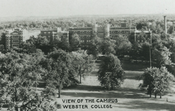
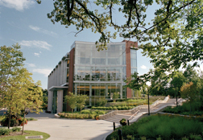

The History Of Webster
Webster University was originally founded on the principle of providing a higher education to those who might not possess the opportunity to obtain one. Today it operates as a private, nonprofit, accredited university offering undergraduate and graduate education. Webster's vision to be a premier U.S- based international university setting a distinct standard for global education was largely shaped by it's unique history.
- Early History
- Decades of Change
- The Education of Working Adults
- Going Global
- Innovative Education For The 21st Century
- Historical Webster University Buildings
Early History
In the early days of the American frontier, poor children were forgotten when it came to education. The Sisters of Loretto, a Catholic religious organization founded in 1812, set out to offer a solution.
The Loretto Community dedicated itself to providing education to those who normally might not possess an opportunity to obtain one. It's this mission that remains at the heart of Webster University today.
The Sisters of Loretto laid the cornerstone for Webster University on Nov. 1, 1915. Originally named Loretto College, the school was one of the first Catholic women's colleges west of the Mississippi River. It was progressive for its time, providing higher education to women when it was not generally made available.
Loretto College opened with eight Sisters of Loretto teaching class for five students. Two students populated the first graduating class in 1919.
Five years later, in 1924, the school changed its name to Webster College to avoid confusion with Loretto Academy, a school operated by the Loretto Community on Lafayette Avenue in St. Louis. The North Central Association of Colleges and Secondary Schools accredited Webster College the same year.
Decades of Change

After struggling through the depressed economy of the 1930s, Webster College saw gradual growth in the 1940s and 50s. Student enrollment started to climb and the physical dimensions of the campus continued to expand beyond Webster and Loretto halls.
But it was the 1960s that saw the most change at Webster College.
Webster opened its doors to its first male students in 1962. Two men enrolled that first year, although the list of available classes for men remained limited. Six years later the school went fully coeducational with no restrictions on the number of classes male students could take.
A grant from the Ford Foundation allowed Webster College to launch its Master of Arts in Teaching program in 1963. The program sought to provide a master's program for teaching professionals who couldn't afford to abandon their everyday work. It was Webster's first venture into offering evening classes for full-time professionals.
Finding it increasingly difficult to finance the college from internal resources, the Sisters of Loretto transferred ownership of the school to a lay board of directors in 1967. The lay board remains in place today, operating Webster as a private, nonprofit, non-denominational university.
The Education of Working Adults

The popularity of the evening programs in St. Louis prompted Webster College to expand its offerings across the state. In 1966, Webster offered its first courses outside of St. Louis at a campus in Kansas City, Mo. It offered a full Master of Arts program there starting in 1973.
Webster modeled its Kansas City curriculum after the successful Master of Arts in Teaching program launched in St. Louis. Although it was geared toward those in the management and service-related fields, it kept the intensive nine-week courses taught by practicing professionals.
Webster College clearly tapped into an unmet educational need at this pointâ a practical higher education option for working adults unable to put their lives on hold.
The practicality of this approach attracted the attention of the U.S. Government. In 1974, the U.S. Department of Defense invited Webster College to become the first to open an extended campus program at Fort Sheridan near Chicago. The program provided military personnel a convenient location to obtain higher education.
The offerings only grew from there. Webster University now offers programs at more than 90 locations throughout the United States, including at 32 metropolitan campuses, 21 corporate sites and 42 military installations.
Going Global

In the 1970s, few European universities offered a flexible, American-style education. Webster College sought to be one of the first. In 1978, Webster opened a campus in Geneva, Switzerland, capitalizing on the global perspective the city would add to a student's education.
The Geneva campus became a popular one, not just for Americans looking to study in Europe, but with Europeans seeking an American-accredited education. The popularity of the program led to the establishment of other European campuses: Vienna, Austria; Leiden, the Netherlands; and London, England.
Campuses since have been added in Shanghai, China, and Cha-Am/Hua Hin, Thailand. These locations add a global perspective that stretches across the Webster curriculum.
Innovative Education for the 21st Century
The evolution of Webster has taken it well beyond its initial days as a small women's liberal arts college. The Webster of today operates as a comprehensive, innovative institution of higher education. In 1983, the school renamed itself Webster University to reflect this development.
Webster University expanded the breadth of its offerings by creating five distinct schools and colleges: the School of Business and Technology; the Leigh Gerdine College of Fine Arts; the School of Education; the School of Communications; and the College of Arts and Sciences.
The university boasts more than 20,000 students at its worldwide campuses and more than 101,000 alumni. And although the university operates more than 100 locations around the world, the home campus of Webster University remains its largest in student population and physical size. More than 7,250 students study at the 47-acre campus in Webster Groves, Mo.
Traditional-aged students. Adult learners. International students. Military personnel. Webster University serves them all, dedicated to providing quality higher education with small class sizes and a blend of theoretical and practical knowledge. Excellence in education remains its primary purpose.
Historical Webster University Buildings
Webster University is a private university with its main campus in Webster Groves, a suburb of St. Louis, Missouri. These are a few of the historical buildings that have been established over the years.